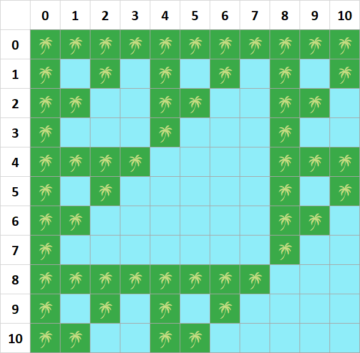
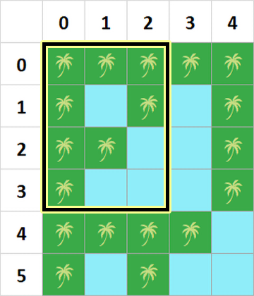
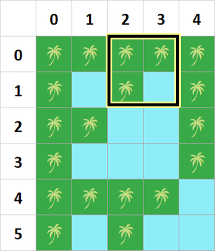
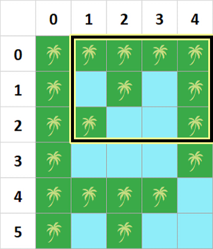
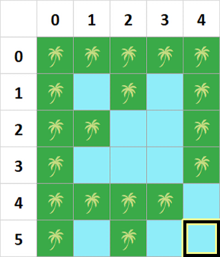

Kepulauan Semiliar terkenal akan lautan dan daratannya yang indah. Kepulauan Semiliar dapat direpresentasikan dengan matriks yang mempunyai $N$ baris, dinomori dari $0$ sampai $N - 1$, dan $M$ kolom, dinomori dari $0$ sampai $M - 1$.
Untuk sebuah petak pada baris $i$ dan kolom $j$, apabila bitwise AND dari $i$ dan $j$ adalah $0$, maka petak tersebut merupakan daratan. Sebaliknya, apabila bitwise AND-nya bukan $0$, maka petak tersebut merupakan lautan.

Kepulauan Semiliar untuk $N = 11$ dan $M = 11$, dengan petak yang mengandung gambar pohon merupakan petak daratan.
Pak Dengklek mempunyai $Q$ rencana perjalanan. Rencana perjalanan ke-$i$ dapat direpresentasikan dengan empat buah bilangan bulat $A_i$, $B_i$, $C_i$, dan $D_i$.
Pada rencana perjalanan ke-$i$, Pak Dengklek ingin mengunjungi semua daratan dari baris $A_i$ hingga $C_i$, dan kolom $B_i$ hingga $D_i$. Di samping itu, Pak Dengklek juga tidak ingin mengunjungi daratan selain dari yang direncanakan. Daratan yang termasuk dalam rencana perjalanan boleh dikunjungi lebih dari sekali.
Pak Dengklek sangatlah atletis, sehingga ia dapat berpindah dari suatu daratan ke daratan mana pun dalam satu lompatan. Akan tetapi, untuk berpindah dari suatu daratan ke daratan lain yang bersisian (dengan salah satu dari empat arah mata angin), Pak Dengklek tidak perlu melompat. Tentu saja, Pak Dengklek tidak boleh berada di lautan kapan pun juga karena lautan sangatlah berbahaya.
Pada setiap awal rencana perjalanannya, Pak Dengklek berada di pantai yang terdapat di luar matriks. Oleh karena itu, ia harus melompat ke salah satu daratan terlebih dahulu. Untuk setiap rencana perjalanan, tentukan banyaknya lompatan minimum yang harus dilakukan Pak Dengklek!
Masukan diberikan dalam format berikut:
N M Q A1 B1 C1 D1 A2 B2 C2 D2 ⋮ AQ BQ CQ DQ
Keluarkan $Q$ baris. Baris ke-$i$ berisi banyaknya lompatan minimum untuk rencana perjalanan ke-$i$.
6 5 4 0 0 3 2 0 2 1 3 0 1 2 4 5 4 5 4
1 1 2 0
Berikut merupakan ilustrasi dari semua rencana perjalanan Pak Dengklek.
   
Pada rencana perjalanan ketiga, Pak Dengklek dapat melakukan hal-hal berikut.
Pak Dengklek menggunakan lompatan sebanyak $2$ kali pada rencana perjalanan ini.